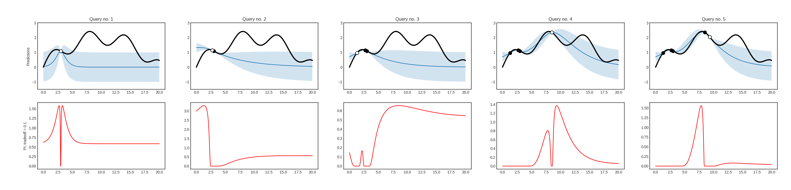
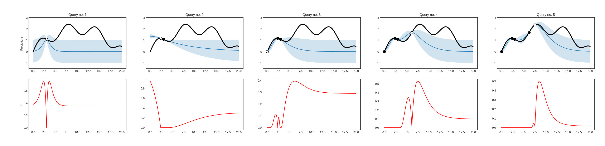
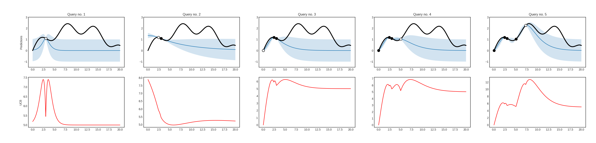

Acquisition functions for Bayesian optimization¶
In Bayesian optimization, a so-called acquisition funciton is used instead of the uncertainty based utility measures of active learning. In modAL, Bayesian optimization algorithms are implemented in the modAL.models.BayesianOptimizer class. Currently, there are three available acquisition funcions: probability of improvement, expected improvement and upper confidence bound.
Probability of improvement¶
The probability of improvement is defined by
where \(\mu(x)\) and \(\sigma(x)\) are the mean and variance of the regressor at \(x\), \(f\) is the function to be optimized with estimated maximum at \(x^+ \)xi` is a parameter controlling the degree of exploration and \(\psi(z)\) denotes the cumulative distribution function of a standard Gaussian distribution.
If you would like to use it with a BayesianOptimizer``, you should pass modAL.acquisition.max_PI as the query strategy upon initialization.
Expected improvement¶
The expected improvement is defined by
where \(\mu(x)\) and \(\sigma(x)\) are the mean and variance of the regressor at \(x\), \(f\) is the function to be optimized with estimated maximum at \(x^+\), \(\xi\) is a parameter controlling the degree of exploration and \(\psi(z)\), \(\phi(z)\) denotes the cumulative distribution function and density function of a standard Gaussian distribution.
If you would like to use it with a BayesianOptimizer, you should pass modAL.acquisition.max_EI as the query strategy upon initialization.
Upper confidence bound¶
The upper confidence bound is defined by
where \(\mu(x)\) and \(\sigma(x)\) are the mean and variance of the regressor and \(\beta\) is a parameter controlling the degree of exploration.
If you would like to use it with a BayesianOptimizer, you should pass modAL.acquisition.max_UCB as the query strategy upon initialization.